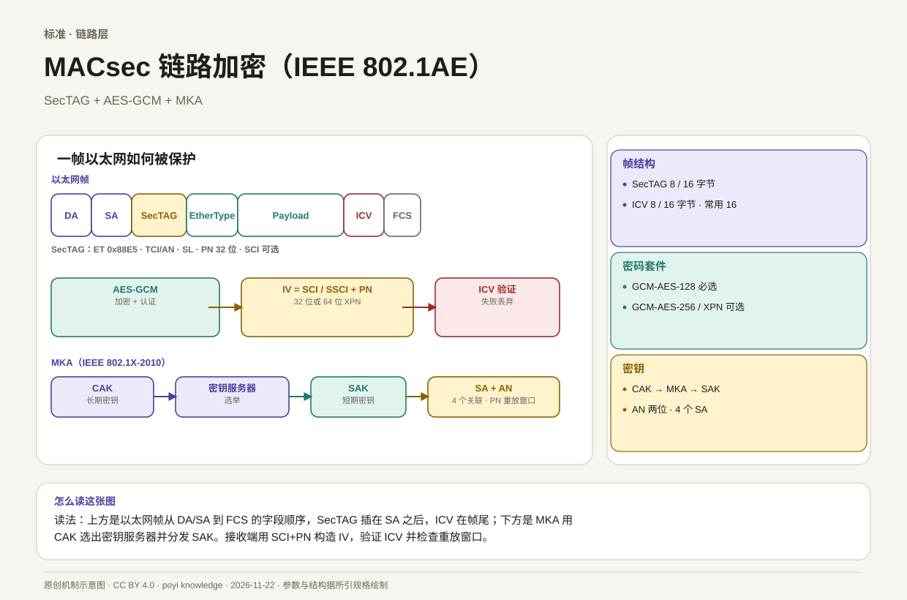
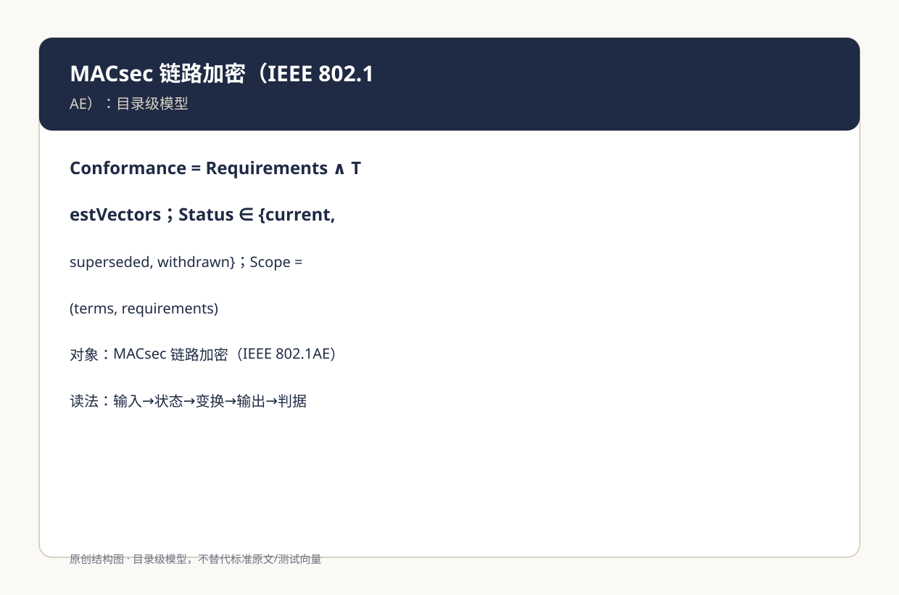

原理与机制
标准：MACsec 链路加密（IEEE 802.1AE）（MACsec link encryption (IEEE 802.1AE)）。### 在以太网帧里加一层安全头
MACsec 在源 MAC 地址之后插入 SecTAG，在帧尾加 ICV，可选加密帧体。SecTAG 为 8 或 16 字节：2 字节 EtherType 0x88E5、1 字节 TCI/AN、1 字节 SL、4 字节 PN，以及可选的 8 字节 SCI。SCI 由 48 位 MAC 与 16 位端口号组成，用来标识单向安全信道。### 密码套件
当前标准以 AES-GCM 为主：GCM-AES-128 为必选，GCM-AES-256 与 GCM-AES-XPN-128/256 为可选。GCM 同时提供机密性与完整性；IV 由 SCI（或 XPN 的 SSCI）与 PN 构造。默认 32 位 PN，扩展包编号用 64 位 PN，避免同一 SAK 下 2^32 帧上限过早到达。

为什么重要
MACsec 保护的是链路层帧，因此以太网上的 ARP、LLDP、IP、MPLS 等都被同一层覆盖，不依赖上层协议是否启用 TLS/IPsec。它适合交换机到交换机、路由器到路由器、数据中心叶脊链路，以及需要线速加密的承载网。### 为什么还需要 MKA
MACsec 只定义帧保护，密钥协商在 IEEE 802.1X-2010 的 MACsec Key Agreement（MKA）。设备用长期 CAK 认证，选举密钥服务器，由服务器生成并分发短期 SAK；SAK 轮换不中断链路，AN 两位允许一个安全信道同时保有 4 个安全关联。
应用与实例
MACsec 可做点对点链路保护，也可做需要中间设备参与的端到端保护；常见于园区核心、数据中心互联、运营商以太网和车载以太网。硬件 MACsec 引擎可线速加解密，适合 10G/25G/100G 端口。### 与上层协议的关系
MACsec 不替代 TLS、IPsec 或应用层加密。它只保护一跳或一段链路，链路两端的交换机能看到明文；真正的端到端机密性仍要由上层协议提供。部署时要同时考虑密钥管理、设备认证、重放窗口和故障切换。

边界与攻击面
接收端验证 ICV，失败即丢帧；PN 递增，replay window 允许一定乱序但拒绝过旧帧。SecTAG 的 SL 处理短帧，confidentiality offset 可选择只加密帧体的一部分（0/30/50 字节偏移），以兼顾某些协议头可见的需求。### 不是万能加密
MACsec 的保护范围止于链路层，不能防止链路两端设备内部泄露，也不能替代终端加密。它依赖正确的 MKA 配置、CAK 保护和 SAK 轮换；配错密钥、关闭验证或过大的 replay window 都会削弱安全性。ICV 长度可为 8 或 16 字节，实际部署多采用 16 字节（128 位）。
历史与背景
IEEE 802.1AE-2006 首次标准化 MACsec；802.1AE-2018 是当前主要版本。802.1AEbw-2013 增加 64 位扩展包编号（XPN），802.1X-2010 定义 MKA。后续修订把 GCM-AES-256 等套件纳入。### 工程位置
MACsec 从运营商设备进入数据中心交换机和车载以太网；它和 IPsec、TLS 形成分层：MACsec 保护一跳，IPsec 保护 IP 层，TLS 保护应用会话。三者不是互斥替代，而是按信任边界叠加。
技术参数与复算边界
该条目的形式模型是 (S=\min_i S_i,\quad S_i\in{\text{密钥强度},\text{分组安全},\text{实现安全}})。输入：输入：MACsec 链路加密（IEEE 802.1AE）的公开参数、密钥/随机数与消息；变量说明：S 为综合安全强度；各分量取最小值，不能只看密钥位数。 预期输出：按 MACsec 链路加密（IEEE 802.1AE） 的规范执行后得到可验证的输出或可比较的优势界。 复算必须给出输入、步骤、输出和单位；示例只演示流程，不替代标准测试向量。
复杂度由密钥长度、分组/状态规模、轮数、随机数质量和敌手模型共同决定；参数越界、版本差异与实现侧信道都可能使公式结论失效。已登记限制：该条目只给出形式模型与可复算步骤，不声称已完成生产实现、侧信道认证或第三方安全评估。
逐步示例与核验
形式模型与复算步骤
[S=\min_i S_i,\quad S_i\in{\text{密钥强度},\text{分组安全},\text{实现安全}}]
MACsec 链路加密（IEEE 802.1AE）的公开参数、密钥/随机数与消息；变量说明：S 为综合安全强度；各分量取最小值，不能只看密钥位数。1.读取标准规定的密钥/分组/模式参数。2.按标准表换算等效强度。3.取最弱分量作为系统强度。边界：公式只覆盖已登记的参数与假设；参数取值、标准版本和实现细节仍以来源为准。
参考出处
- Wikipedia search entry for MACsec 链路加密（IEEE 802.1AE）. https://zh.wikipedia.org/w/index.php?search=MACsec%20%E9%93%BE%E8%B7%AF%E5%8A%A0%E5%AF%86%EF%BC%88IEEE%20802.1AE%EF%BC%89
- Handbook of Applied Cryptography (Menezes, van Oorschot, Vanstone). https://www.cacr.math.uwaterloo.ca/hac/